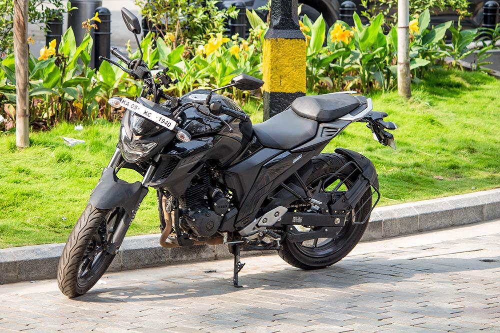
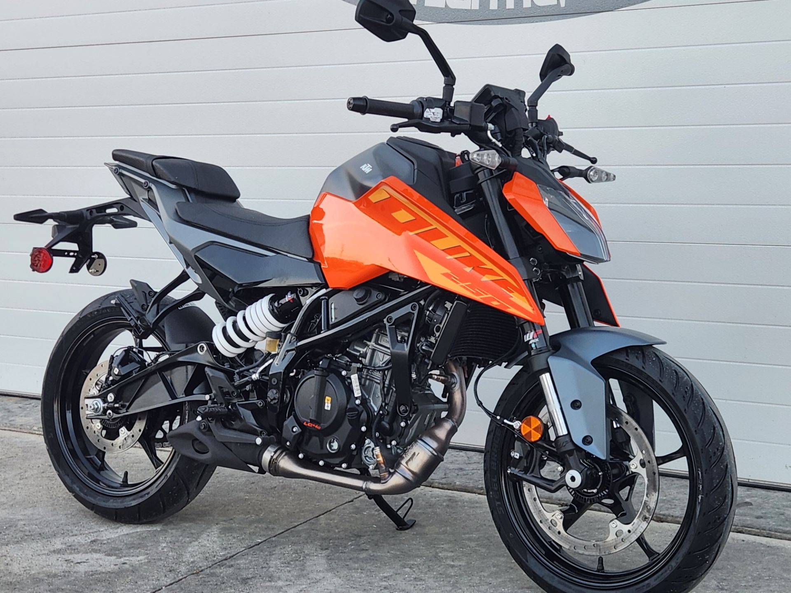
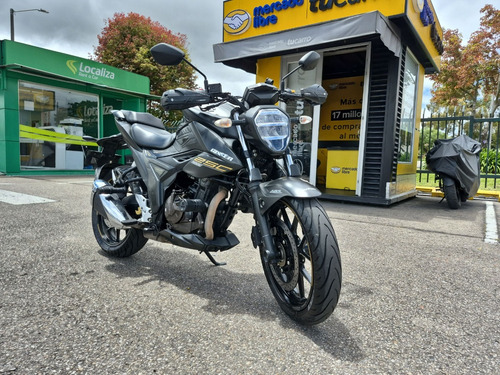
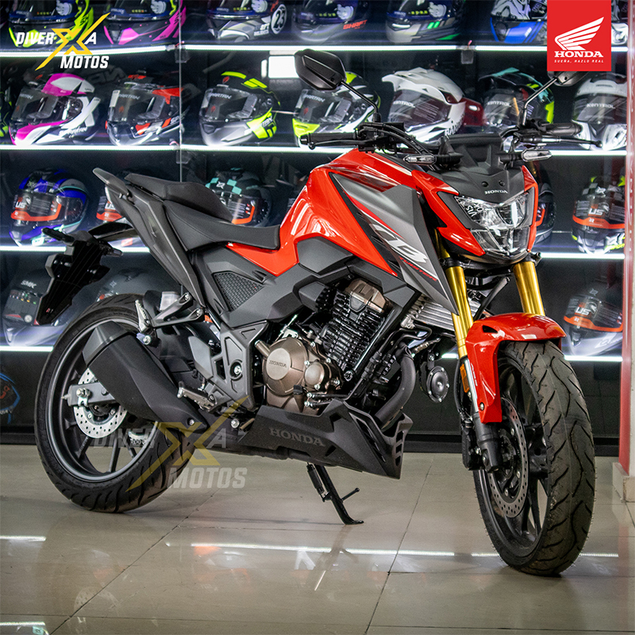

Introducción
En Colombia, las motocicletas de 250cc son una opcion popular debido a su equilibrio entre potencia y economia. Aquí encontrarás una selección cuidadosamente curada de maquinas que destacan por su calidad, innovación y valor.
Modelos Recomendados
Hemos evaluado diversos modelos basándonos en criterios como rendimiento, durabilidad, diseño y costo-beneficio. A continuación, presentamos una lista de las mejores opciones disponibles en el mercado colombiano.
Yamaha FZ25
 Saber másLa Yamaha FZ25 es conocida por su motor potente y eficiente, ideal para desplazamientos urbanos y viajes cortos. Su diseño moderno y ergonomico la convierte en una opcion atractiva para los motociclistas colombianos.
KTM Duke 250
 Saber másLa KTM Duke 250 destaca por su agilidad y rendimiento deportivo. Con un diseño agresivo y tecnologia avanzada, es una excelente opcion para aquellos que buscan emocion y estilo en cada viaje.
Suzuki Gixxer 250
 Saber másLa Suzuki Gixxer 250 combina un motor robusto con un diseño elegante. Es perfecta para quienes buscan una motocicleta versatil que ofrezca tanto rendimiento como comodidad en sus desplazamientos diarios.
Honda CB300F
 Saber másLa Honda CB300F es una motocicleta confiable y eficiente, ideal para el uso diario. Su motor de 300cc ofrece un rendimiento suave y consistente, haciendo de esta moto una excelente opcion para los motociclistas en Colombia.